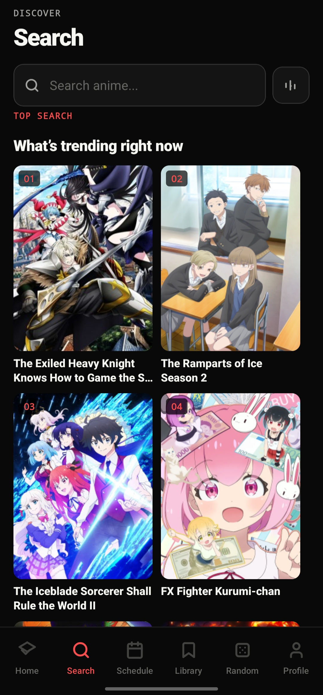
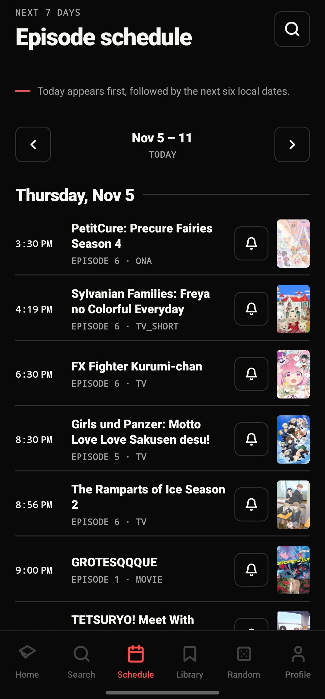
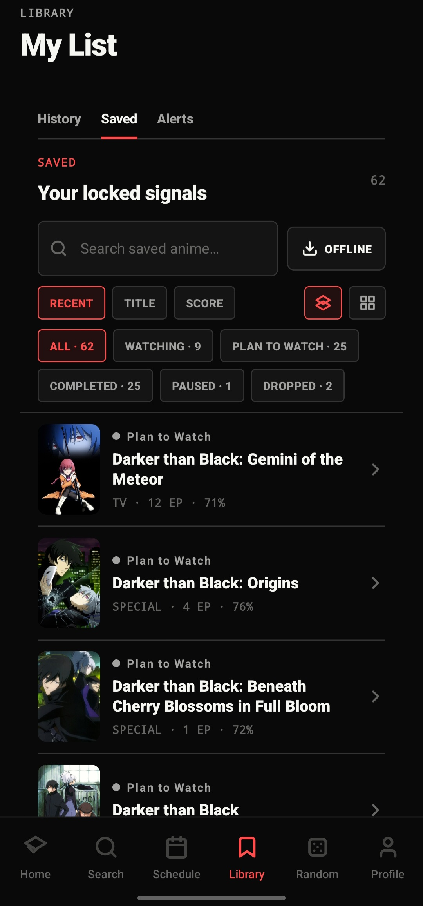
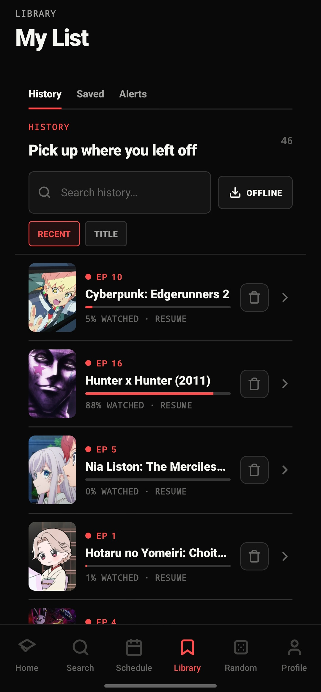
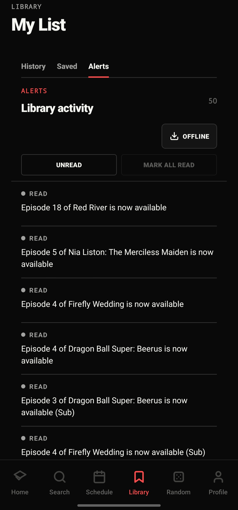
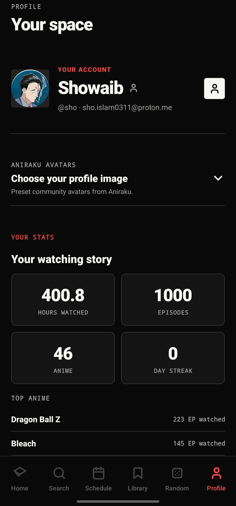
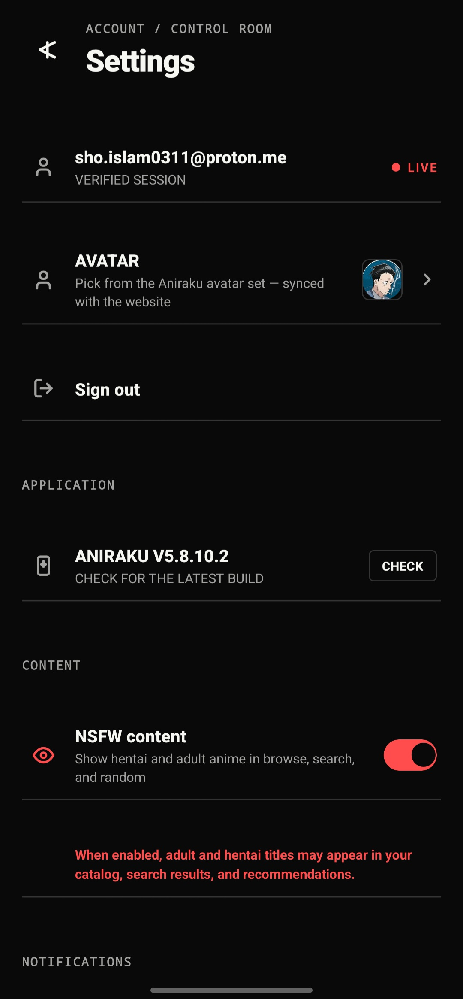
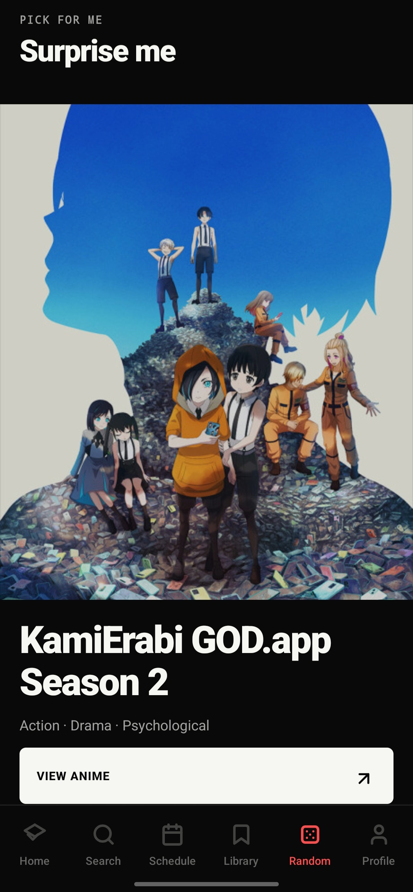

Anime,
without
the noise.
A free anime app for Android, built in the open. No ads, no tracking, no sign-up wall — install it, pick a show, press play. Offline downloads, AniSkip, and a seven-day airing schedule included.
- Version
- V5.8.10.2
- Package
- aniraku.anime.app
- Min Android
- 9.0+
- Builds
- ARM64 · ARM32 · Universal
Built for you.
Real captures from v5.8.10.2 — no mockups, no relabelled screens. Here's what you're actually tapping through.








Every detail,
at a glance.
Open any anime and you get the synopsis, when the next episode airs, the watch order, and what to start after it ends.
- 01Share Anywhere
Every anime has a link —
aniraku://anime/{id}in the app,aniraku.tech/anime/{id}on the web — with a copy button. - 02Airing Countdown
Following something weekly? A live countdown shows exactly how long until the next episode, plus which episode it is.
- 03Relationships
Sequels, prequels, side stories and spin-offs, grouped by relation type so the watch order isn't guesswork.
- 04More Like This
A recommendations rail pulled per title, so the next show is one tap away instead of a search.
- 05Notify Me
Bell icon on any anime. When a new episode drops you get a push and an entry in Library → Alerts.
- 06Episode Grid
Thumbnails, filler tags, per-episode progress, a 1–10 rating on each, and 20 episodes a page.
Watch
your way.
It works the way your hands expect: tap to pause, swipe for volume, double-tap to skip. And when a stream dies, the player rotates servers before you notice.
Double-tap the left side to jump back 10 seconds, the right side to jump forward. Hold your finger down for 2× speed.
Slide up the left edge for brightness, the right edge for volume. Drag the bar to scrub.
Pick the track, then set font, size, background opacity, outline thickness and offset. Preferences stick between episodes.
Sub and Dub servers side by side, each remembering its own quality. Four fallback layers rotate if a stream won't start.
Intro and outro markers are detected automatically, with a skip button on the video — no more 90-second openings.
Timer presets from 15 minutes to 2 hours, with a countdown pill on the video. It pauses itself while you doze off.
Install Aniraku.
No Play Store, no account, no waiting. Grab the file, tap it, done.
All devices · ARM64 + ARM32 + x86_64
Download · V5.8.10.2 → 64-BIT ARM64Most modern phones · smaller file
Download APK → 32-BIT ARM32Older devices · Android 9+
Download APK →- 01
Download the APK — Universal works on every phone. Only pick ARM64/ARM32 if you know you need the smaller file.
- 02
Allow unknown sources — Android will ask. It's under Settings → Security → “Install unknown apps”.
- 03
Install — open the file from your notifications and tap through.
- 04
Open & watch — that's genuinely it. Sign in later if you want your list synced.
Package aniraku.anime.app. Upgrading from the old aniraku.anine.app alpha, or from anything older than v5.8.0? Uninstall it first — Android treats it as a separate app. On some devices you may need to revoke the permission after install to re-enable Play Protect.
Latest news.
Announcements from the Aniraku team — shown here and in the app.
Support the project.
One person builds this in their spare time. If Aniraku earned a spot on your home screen, here's how to say thanks.
Chip in monthly if you can — it keeps the servers up and the updates coming.
Support on Patreon →Got the Binance app? Scan the code or send anything you like straight to the dev — no fees, no address to mistype.
- Open Binance → Pay → Send
- Paste the UID above and confirm the name
Read the docs.
The same docs that ship with the repo — no separate wiki to go stale.
01Is this app completely free?+
Yep. No price, no premium tier, no "free*" asterisk. If you ever pay, it's a donation because you felt like it.
02Do I need an account?+
Nope. Install it and watch. An account only matters if you want your watch history and library synced.
03Does this track my data?+
No analytics, no telemetry, nothing phoning home about what you watch. Check the source if you don't believe it.
04What devices are supported?+
Anything on Android 9 or newer. Not sure which chip your phone has? Just take the universal APK.
05Why isn't this on the Play Store?+
Google doesn't allow this kind of app. Direct downloads from GitHub mean you always know exactly what you're installing.
06Is this legal?+
Aniraku doesn't host a single video — it's a player that reaches public sources. Whether watching them is fine where you live is on you, so check your local laws.
07Can I contribute?+
Please do. Bug reports, translations, code — it all lives on GitHub and every bit helps.
08Do downloads actually work offline?+
Yes. Downloads are saved on your device and play with no connection at all. You can cap storage at 1, 2 or 5 GB (or leave it unlimited) and lock downloads to Wi-Fi only. Progress is tracked to the byte, and interrupted downloads resume instead of starting over.
09What is AniSkip?+
Intro and outro markers come from the stream's own chapter data plus AniSkip, matched to the episode you're watching. When an opening or ending starts, a skip button appears on the video with a countdown — one tap and you're past it. If a show has no timing data, the button simply never shows up.
10Can I import my MyAnimeList or AniList library?+
Yes. In Settings → Library Sync, connect either account to import your list and watch progress, or push your Aniraku progress back out. Import matches titles against Aniraku's catalog and tells you exactly what came across, what was already there, and what had no match.
11Why didn't I get a notification for a new episode?+
Notifications only fire for shows you've added to your list, and only after the episode is actually playable — we check the stream before sending anything. On Android 13 and newer you also have to allow notifications for Aniraku, and battery savers sometimes hold them back. Delivered alerts always land in Library → Alerts, so nothing is ever lost.
12Can I watch on my TV?+
Use Android's built-in screen mirroring or cast your whole phone to the TV — that works today. A dedicated cast button inside the app isn't planned, because screen mirroring already covers it without another moving part.
13How do I update to a new version?+
Settings → Application has a CHECK button that tells you when a newer build exists, and the Releases box above always links the current one. From v5.8.0 or newer the APK installs straight over the previous one, so your library and history stay put. Coming from V5.7.9 or older — including the old aniraku.anine.app alpha — uninstall it first; Android treats those as separate apps.
14How do I delete my account and data?+
Settings → Delete account wipes your profile, watch history, ratings, bookmarks, comments, notifications and preferences in one go. No account? Clearing history and saved titles in Settings removes what's stored on the device.
15Why is NSFW content hidden?+
It's off by default. Turning it on in Settings asks you to confirm you're 18 or older, and it only changes what the catalog search asks for — the preference itself is stored on your device. Turn it back off whenever you like.